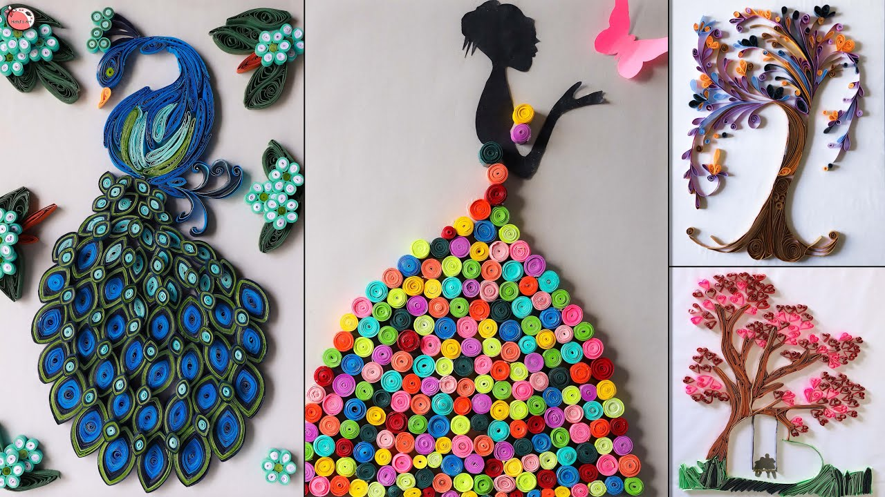

Quilling
Every Tuesday and Sunday at 4:00 p.m.
Quilling or paper filigree is an art form that involves the use of strips of paper that are rolled, shaped, and glued
together to create decorative designs. The paper is rolled, looped, curled, twisted, and otherwise manipulated to create
shapes that makeup designs to decorate greetings cards, pictures, boxes, eggs, and to make models, jewelry, mobiles, etc.
Quilling starts with rolling a strip of paper into a coil and then pinching the coil into shapes that can be glued together.
